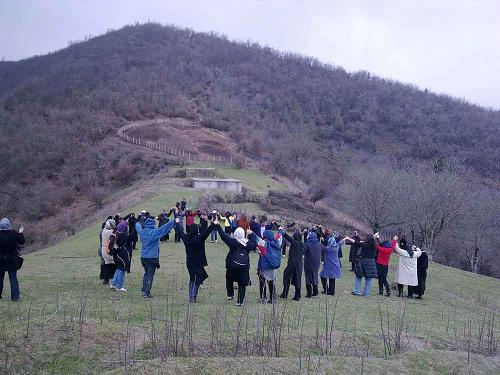
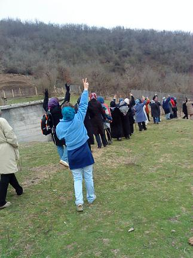
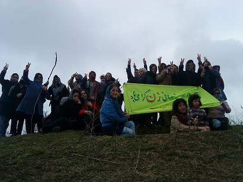
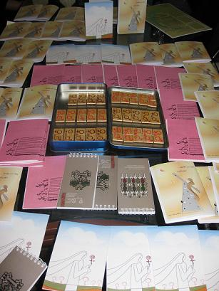

|
|

8 مارس روزی که نمی توان از ما دریغ کرد
گزارش گرامی داشت 8 مارس در رشت
سه شنبه18 اسفند 1388
تغییر برای برابری در هشتم مارس ۱۸۵۷زنان کارگر پارچهباف در آمریکا در مخالفت با کار سخت و دستمزد ارزان و برای کاهش ساعات کار و بهبود شرایط آن و افزایش دستمزد به خیابانها آمدند تا بهانهای شود برای آغاز تغییر برای برابری و نامگذاری این روز به نام روز جهانی زن در سال ۱۹۲۱.
اعتراضات زنان اما در ایران با نخستین قدمهای مشروطهخواهی و در قالب حق تحصیل و آموزش همراه شد. و اولین مراسم هشت مارس در سال ۱۳۰۰ در رشت و به همت «جمعیت پیک سعادت نسوان» برگزار شد تا اولین قدمها در راه مطالبات برابری در قالب تجمع برداشته شود. با همین اقدامات بود که سنگ بنای برابریطلبی در ایران نهاده شد تا برسیم به ۸ مارس ۱۳۸۸ و راه پشت سر گذاشته و راه دراز پیش رو.
هشت مارس امسال برای زنان رشت نیز همچون سال گذشته، با برگزاری گلگشت، تهیه بروشور و تقویم همراه بود به این امید که سالی دیگر با گامهایی مستحکمتر و فضایی آزاد آغاز شود.
برگزاری گلگشت

روز جمعه، جمعی از زنان رشت که از امکان گرامیداشت ۸ مارس در خیابانها محروم هستند، با برگزاری گلگشتی در یکی از مناطق کوهستانی نزدیک رشت، روز جهانی زن را گرامی داشتند.

در این گلگشت که با حضور ۶۰ نفر از زنان و فعالین حقوق زنان برگزار شد، پس از کوهپیمایی مختصر و صرف جمعی نهار، برنامه هایی که برای این روز تدارک دیده شده بود اجرا شد، در ابتدا حضار تک تک به معرفی خود پرداختند سپس یکی از فعالین کمپین رشت ، داستان کوتاهی را که خود به مناسبت 8 مارس نوشته بود خواند، پس از آن نمایش بسیار تاثیر گذاری با موضوع تجاوز به زنان در جنگ اجرا شد.

این نمایش که به تاثیر روانی تجاوز بر زنان و انگیزه هایی که متجاوزان از این عمل غیر انسانی دارند را به شیوایی بیان می کرد به شدت مورد استقبال شرکت کنندگان در گلگشت قرار گرفت.
در نهایت نیز بحثی با محوریت مقاومت فردی و جمعی زنان، میان حاضرین صورت گرفت. در این بحث برخی از زنان از مقاومت های فردی خود در زندگی علیه تبعیض سخن گفتند . برخی نیز به جنبش زنان به مثابه مقاومتی جمعی که بیش از صد سال است در ایران جریان دارد پرداختند، و نهایتن بحث با این جمع بندی که مقاومت فردی زنان باید در پیوندی سازمان یافته با مقامت های جمعی زنان باشد تا نتایج تماندگاری داشته باشد به پایان رسید.
در حاشیه این گلگشت، محصولات کمیته هنری کمپین رشت ازجمله تقویم سال ۸۹، کارت پستال و پینهای طراحی شده به نفع کمپین به فروش رسید. همچنین بروشورهای تهیه شده به مناسبت ۸ مارس بین حاضرین توزیع شد.
تهیه و توزیع دفتر چه هایی به مناسبت 8 مارس
فعالین حقوق زنان در رشت، به سنت هرساله با تهیهی دفترچه هایی با مطالبی درمورد مسایل زنان و با توزیع آنها در سطح شهر به استقبال هشت مارس (روز جهانی زن) رفتند.
این دفترچه های 32 صفحه ای شامل مطالبی با عناوین«تاریخچه ۸ مارس»، «قاچاق زنان، آخرین خط خشونت»، «تبعیض در بازار کار»، «یک زن ـ سوسن تسلیمی»، «حق مسلم پوشش»، «خانهداری؛ پیچیدگی پنهان»، «خانوادهای که "رییس" ندارد»، «زنان در چنبره قانون در ۳۰ سال گذشته»، «فراز و فرود مقاومت» و آماری از وضعیت زنان، بود.

به سنت هر ساله مطالب این دفترچه ها روان و ساده و کوتاه و متنوع انتخاب شده بود تا برای مخاطبانی که در کوچه و خیابان می توان یافت جذاب باشند.
توزیع بیش از هزار نسخه از این دفتر چه ها، آن هم در شرایطی که نیروهای امنیتی همه ی خیابانها و کوچه های شهر را قرق خود کرده اند و هر بازداشتی می تواند پیامد هایی غیر قابل پیش بینی داشته باشد، تنشان از ایمان فعالین کمپین در رشت به ارمانهای برابری خواهانه دارد. امید که بتوان روزی 8 مارس را نه در پناه سرنیزه ها که در زیر آسمان آبی و بر روی آسفالت های شهر جشن گرفت.